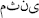

Son günlerde "gündem(!)" haline gelen bir yaklaşım dikkatimi çekti. "Çok eşlilik"...
Kuran'dan onay aldığı iddia edilen, hatta "yasallaşması talep edilen" çok eşlilik, bir gündem olarak insanımızın karşısına çıkartılıyor. Bu meseleyi,sadece fıkhen ele almamak gerektiğini düşünüyorum. Çünkü fıkhi bir karşıtez; "istemeden sistem içi bir hesaplaşmaya dönüşebilir."
Meseleye girişmeden evvel, toplumsal zihin kirliliğine atfen bir şeyler söylemek gerekir;
Musa ile Firavun hesaplaşmasının özünde yatan gerçeklik; iki tezin çarpışması değil, mevcut toplumun sosyo-kültürel hezeyanının kökleşmişliği olarak karşımıza çkar. Yani Firavun, gücünü "sihirbazların" ya da madrabazların ürettiği sonuçlardan alıyorken, Musa'nın bu düzene karşı duruşu öncesi aldığı eğitim; sonuçlara entegre bir algının, neden-sonuç ilişkisi kuran bir zihniyete evrilmesi noktasında açığa çıkmıştır.
Daha belirgin biçimde izaha kalkarsak;
Ali Şeriati'nin "Abdestli Kapitalist" dediği algının tarihsel kimliği irdelendiğinde; bu zihniyetin, dikey bir ilişkiden beslendiğini söylememiz gerekir. Yukarıdan aşağı doğru biçimlenen bir din algısı(şirk) insan zihninde, nedenleri sorgulanmayan sonuçlara biat kültürü üretip, Kuran'ın ve tarihsel dialektik dairesindeki "dine karşı dinin(tevhidin)" tam zıttı yönde konuşlanır.
Bu çerçeveden incelediğimizde, Musa'nın Bilge Kul ile yaşadığı süreç önem arz eder.
Bildiğiniz gibi, Firavun'a karşı koyma sürecinde eğitime tabi tutulan Musa, Mecma'ül Bahreyn'de "Bilge Kul" ile tanışır. Bu kişi, bölgenin yöneticisi(ya da yöneticilerinden biri)dir.
Bilge Kul ile yaşadığı süreçte Musa'nın zihninde, sonuçları gözlemleyerek "yargı üretme" hastalığı kırılır.
Kehf Suresi dahilinde anlatılan bu süreç, Bilge Kul'un Musa'dan "yaptıklarına tepki göstermemesini" dilemesi ile başlar. Musa söz verir. Ve Bilge Kul, hiçbir şey söylemeksizin, bir gemi batırır. Musa hemen atılır...
Bilge Kul, "ben sana dememişmiydim, katlanamazsın diye" şeklinde tepki gösterir.
Bu durum, Musa'nın Firavun hegemonyasının dayattığı algının etkisiyle hareket ettiğinin göstergesidir. Musa, sonuçlara bağımlıdır. Nedenleri sorgulayacak bir zihinsel evrim henüz gerçekleşmemiştir...
Firavun, tarihsel bir dinin sembolüdür. İnsanın sahip olması gereken "algının", kendi çıkarlarına ters düşmesi sonucu, o algıyı programlayan zihnin kendisidir. Toplumların bu hale gelmesi için, toplumlara dayatılan din algısının, şekil ve ritüellere saplanması gerekir. Ruhu katledilmiş bir dinselliğin egemenleşmesi, hegemon algı haline dönüşmesi gerekir. Akabinde, toplum "raiye/davar sürüsü(Bakara 104)" haline dönüşür.
İslam'ın insanı götürmek istediği yer, bugün ki zihinsel paradigma değildir. Dolayısı ile; bugün fıkıh tartışmak, "elmut" adlı yeni bir meyve üretmek gibi olacaktır. Elma ile Armut ayrıdır, ama bugünün zihinsel algısı nazarında bu çok önemli değildir.
Kuran toplumu nereye götürüyor ?
Hani biz "beyt"i insanlar için bir sevap yeri ve emin olan yer olarak tayin ettik. Siz de İbrahim makamından bir "salat" yeri edinin. Ve biz İbrahim ve İsmail'e; tavaf edenler, Akifler ve Rükuedenler için beytimi temiz tutun dedik. (Bakara Suresi 125.ayet)
Kuran'ın tanımladığı ideal ortam/toplum bu ayette izah edilir. Bu ayette geçen "beyt", sadece "kabe"değildir. Beyt, gecelenilen yer demektir.
İbrahim(a.s.)'a bir beyt inşa ettirilmiş, merkezde kabe olan bir toplum algısı üretilmiş; belirli prensipler ile bu kurum güvence altına alınmıştır.
Bu prensipler şu şekilde özetlenmelidir;
• Sevap
• Salat
• Tavaf
• Rüku
• Emniyet(em'an)
Sevap; karşılık demektir. Emeğin karşılığı manasına gelir. Salat; "ateşten korunmak için harekete geçmek" manasına gelir. Tavaf: bir yerde dolaşma, Rüku: zenginin fakirleşmesi/mal dağıtma, emn: güvenlik, emniyetli gibi manalara gelir. (Bkz. Lisan'ül Arab, saly,salv,tvf,rakea mad.)
Ayete dikkatle baktığımızda, "ateşten/tahriklerden" kurtulan bir Resul ile "salat" özdeşleşmiştir. İbrahim Resul'ün kurtulduğu ateş(harrikuhu); tahrik, galeyana gelen kitlelerin zihninde beliren öfke manalarına gelir.
Yani Firavun'un halka dayattığı algı ile Nemrut'un dayattığı algı, tarihsel olarak aynıdır!
Salat bu anlamı itibari ile, "yaşamın içinde ki bir fonksiyondur." Namaz olarak çevrilmesi(ki namaz Arapça bir kelime değildir, farsçadır) tamamen bir katliamdır!
Namaz, daha önce de belirttiğim gibi, bir ritüeldir. Salat ise ibadettir. Yani, Salat; kulluğun yaşamdaki fonksiyonel tavrıdır. Namaz ise; ilanı ve sosyolojik temsilidir. Ve bu iki kavram iç içe geçmiştir.
Mesela, Maun Suresi'nde belirtilen; "yazıklar olsun o namaz kılanlara" vurgusu, yapı itibari ile çok önemlidir. Bu sure, iniş sırasına göre 6. yılda vahyedilmiştir. Yani henüz Allah Resulü Mekke'dedir. Ortada riya namazı kılacak bir cemaat yoktur. Ve bu sureye kadar, henüz biçimsel bir namazın varlığından söz edilmemiştir. Bundan ötürü; Mekke'de yaşayan elitlerin kıldığı namazın eleştirildiğini söylemek gerekir.
Mekke'de yaşayan müşriklerin tamamı; Allah'a inanmakta, namaz kılmakta ve zekatvermektedirler.(Kuran ve Sünnette İbadet tarihi-Yaşar Soyadlı/Diyanet Yayınları) Hatta malının 1/40'ını veren Velid ibni Muğile Kuran'da eleştirilir;
Malının azını verdi, çoğuna cimrice sarıldı (Necm Suresi 34. ayet)
Yani yukarıda belirttiğim gibi, tarihsel şirk; Mısır'da, Nemrut sarayında, Mekke'de vücut bulmuş, tüm muhalif tepkiler, Kuran'da Resul sıfatıyla anılan karakterlerde belirginleşmiştir.
Bugün de yaşanan şey budur. Şekillere, ritüellere, görüntüye saplanan din algısı iflas etmiş, ruhu olmayan, içi boş bir teneke; din adı altında pazarlanmıştır.
Dolayısı ile, Abdestli Kapitalizm ve üst sınıfı olan "NURJUVAZİ" türemiş, toplumda bu güruhların fiillerine muhalif "dini" bir söylem kalmamış(bırakılmamış), hertürlü bozgunculuk ve talana rağmen"şirk ve kenz grupları" büyük kitlelere hitap eder hale gelmiştir.
"Kim bize memur olursa, kendine bir zevce edinsin. Yardımcısı yoksa bir de yardımcı edinsin. Meskeni yoksa bir mesken edinsin." "Kim bunun dışında bir şey edinirse, bu kimse haindir, hırsızdır." [Ebu Davud, Harac 10, (2945).]
Allah elçisinin bu sözüne rağmen, hırsızlar ve hainler itibar görür hale gelmiş, insanlar "tüm olanlara rağmen, iyi yönünden bakalım edebiyatına kapılmış" kısacası; Firavun tarafından büyülenerek, saf şekil ve görünüme eklemlenmiştir.
Bunun en belirgin dışavurumu; "Dindar Cumhurbaşkanı" talebidir. Hertürlü kenz ve şirke rağmen; Allah'ın emrettiği dinin yanından bile geçmeyen bir adam, "kıldığı namazlardan dolayı, dindar olarak addedilmektedir." Bu talep, sözde "halkın" talebidir...
Hemde şu hadise rağmen;
"Bir adamın namazı, niyazı sizi aldatmasın. O adamın dirhem ve dinarla (yani para) ile olan ilişkisine bakın." (Hz.Muhammed)
Kuran'da ki Firavun'un halk üzerindeki egemenliği "tam olarak budur." Yapıp ettikleri sorgulanmaksızın, dış yüzüne bakarak hakkında hüküm koyma sapıklığının en büyük yansımasıdır...
Bu tip toplumlarda en önemli talep;
• Güç (1)
• Servet (2)
• Şehvet (3)
• Şöhret (4)
Gibi bir 4'lüdür.
Bu 4'lü; Adem'in yasak ağacıdır. Yani, bir aradalık kuralını bozan "çelişki kaynaklarıdır."
Ve Şeytan Adem'e dedi ki; Sana ebedileşme ağacını yani yıkılmayan mülkü göstereyimmi ? (Taha Suresi 120)
Mülk kavramının açılımı; servet, şöhret, şehvet ve güç olarak karşımıza çıkar...
Şimdi, "şöhret(4) aşkı ile"; dini tersyüz ederek "çok eşlilik talebinde bulunan(!)" Sibel Üresin adlı şahsın tanımladığı ideal erkek tipinin özelliklerine bakalım;
"Zengin(1), kariyerli(1), parası olan(2) ve cinsel gücü (3) fazla olan erkek çokeşliliği seçebiliyor. Hiçbir kadın fakir bir adamın ikinci karısı olmaz. Erkek, daha cilveli, daha çok gülen, cinsel anlamda kendisini mutlu eden kadına koşuyor. Erkek olsam, çokeşli olurdum." (Habertürk)
Tamamen "şeytani" hegemonlaşma araçları olan bu araçlar üzerinden dayatılan bir görüş, sistem içidir, kapitalizm ile çelişmez; dolayısı ile "İslamdışıdır."
Bu önkabul ile geliştirilen bir düşünce "Firavun sihirbazlığı" dışında bir şeyin ürünü değildir!
Şimdi gelelim işin fıkhına;
Fıkıhta "mübahlaştırmak için her türlü yola başvurulan" Teaddüd-ü zevcat yani çok eşlilik meselesinin anlaşılmamasının nedeni; meşhur bir rivayettir. İslam Sosyalizmi adlı eseri ile önemli bir mevki edinmiş olan Sıbai'ye göre de, Urve Hadisi diye anılan rivayet, ilgili ayetlerin üzerini örtmüş, anlaşılmaz hale getirmiştir.
İlgili ayetler şu biçimdedir;
Ey insanlar!
Rabbinize takvalı olun. O Rabbiniz ki, sizi bir tek canlıdan yarattı. O canlıdan da eşini yarattı. Onlardan da birçok erkek ve kadın türetti.Ve Allah'tan sakının! O Allah ki, O'nunla istekleşiyorsunuz.Ve akrabalardan sakının!Muhakkak Allah sizin üzerinize tam bir kontrol edicidir. Ve yetimlerinize mallarını verin. Temizi pise değişmeyin. Onların mallarını kendi malınıza katarak yemeyin. Bunu yapmak kesinlikle büyük bir suçtur.
Ve eğer ki yetimleriniz konusunda adaleti koruyamayacağınızdan korktuysanız; o takdirde sizin için hoş (helal, uygun) olan, yetimlerin kadınlarından ikişer ikişer, üçer üçer, dörder dörder nikâhlayın.
Şayet o takdirde de adaleti gözetemeyeceğinizden korktuysanız, bir tanesini nikâhlayın. Ya da sahibi bulunduğunuz cariyenizi nikâhlayın.
Bu haksızlığa sapmamanız için en uygunudur. (Nisa Suresi 1-2-3. ayetler)
1.Ayette geçen "ittika" sözcüğü, meallerde korkma olarak çevrilir. Esas manası takvalı olmaktır. Ve pasajda takvanın koşulu; "adalet/eşit bölüştürme" olarak belirginleştirilir. Yani, bir insan bu ayet çerçevesinde, adalet dışına çıkacak bir işe tabi olursa, takva dairesinin dışına çıkar.
Pasajın devamında, adalet vurgusu "akrabalara yönelik" bir hal alır. Yani, akrabadan sakınma vurgusu, cinsel değildir. Pasajın temel vurgusu zaten bu değildir! Pasajın vurgusu; "adalet/eşit bölüştürme"dir. Akrabalardan sakının diyerek, onlara adil davranın gibi bir mantık üretilir.
Klasik meallerde, "yetimler ile evlendiğinizde" olarak çevrilen 2. ayette geçen "yetama" ifadesi, salt anlamda "yetimler" manasına gelir. Hiçbir surette evlilik ile ilgili bir bahis yoktur.
Bu vurgu; yapılan bir işe işaret eder. Yani, birileri; yetimlerin mallarıyla kendi mallarını karıştırmaktadır. Ancak, belirsiz olan (lam'ı tarif) kavrama baktığımızda şu mana ortaya çıkar.
- Hali hazırda bazı erkekler, yetim anneleri ile evlenmiş. Yetimlerin malları ile kendi mallarını karıştırmıştır. Yani, hali hazırda bu geleneğin var olduğu gerçeği ortaya çıkmaktadır.
Bu yetimler, Bedir ve Uhut savaşında babası şehit olan çocuklar olduğu gibi, kabile seferlerinde ölenler de olabilir.
Ve pasajın adalet vurgusu icabı; evlendiğiniz kadınların yetimleri ile "sizden olan çocuklar arasındaki adalet/eşit bölüştürme" ve yetimlerin kendi mallarını kendilerine verme manası çıkar.
Ayetin devamında ki "en-nisai/kadınlar" ifadesi, "el" yetama ifadesi ile perçinlenir. Belirsiz olan kavram, böylece belirli hale gelir. Yani, ikişer, üçer, dörde nikahlanacak olanlar; yetime bakmakla yükümlü olan kadınlardır. (Anneleri, teyzeleri, halaları...vs.)
" mesna", " sülase" ve " rüba" sayı sıfatları ile geçen, ikişer üçer, dörder olarak nikahlama vurgusu; hiçbir surette "okuyan kişi muhatap alınarak ifade edilmez."
Bu ayetten; ikinciyi, üçüncüyü, dördüncüyü nikahlayın manası çıkmamakla birlikte; üleştirme sayı sıfatları ile kullanılan bu ayetten şu anlam çıkmaktadır;
Bu kadınları(yetime bakmakla yükümlü kadınları), kendi özelliklerine uygun erkeklerle, ikişer, üçer, dörder halde nikahlayın. Yani, onları evlendirin! İkişerli, üçerli, dörderli gruplar halinde evlendirin.
Bu durumu süreci göz önüne alarak incelersek durum iyice belirginleşecektir.
Erkekler ölmüştür, bekar erkekler mevcuttur. Kadınlar ortada kalmıştır. Bir an önce birilerinin el atıp, toplu nikahlamalar yaparak; bekar erkeklerin öncelikli olarak "yetim yakınları" ile evlendirilmeleri gerekmektedir.
Bu bir anlamda "toplu nikahlanma töreni" manası gibidir...
Libidosu yükselen herkes bu ayetten "cevaz aldığını iddia ederek" çok eşlilikten bahsetmektedir.
Bu durumun imkansızlığının 2. ispatı şudur;
Nisa Suresi 2. ayette; "güç yetirme" vurgusu yapılır. Adaleti sağlamaya güç yetirmek biçiminde kalıba sokulan bu kavram; gelecek bütün zamanları kapsar. Yani manası;
Kadınlar arasında adalete asla güç yetiremezsiniz biçimindedir. Dolayısı ile, pasajın ön koşulu olan adalet ve takva gereği; çok eşlilik imkansızdır.
Hatta, bu durumun varlığını meşru görmek; Kuran'ı tahrif etmeye teşebbüs olup, bizzat küfürdür...
Tarihsel şirk dini, vahyin dinini ters çevirmek sureti ile yapılanmış ve biçimlenmiştir. Kuran ve Resul kelamını etkisizleştirip, din dairesinin dışına iterek biçimlenen bu ideoloji bugün yeni bir sınıf yarattı;
Nurjuvazi Sınıfı...
Jeep, Villa, Christian Dior marka gözlük, Vakko marka eşarp, Asya Finans hesap cüzdanları, Louis Vitton marka çanta...
Kaynakçı misali göze takılan gözlüklerin ve süslü elbiselerin üzerine sarılan türban, dini yeterlilik haline gelmiştir.
Bu; dindarlık değildir.
Abdestli Kapitalizmin üretmek istediği Nurjuvazi sınıfının belirgin sembolleridir. Ve kenz tabanlı bir sosyo-ekonomik duruşun temsilidir.
Bu duruşun yaygınlaştığı toplumlarda, kara lastikli kızlar, açlıktan ölen bebekler, çocuklarına ekmek veremediği için intihar eden anneler, kredi kartı borcu yüzünden kendisini yakanlar, çalıştığı halde geçinemeyenler, kira mahkumları çoğalır. Ama hiçbiri "toplumsal bir sorun olarak algılanmaz."
Ve Elçi şöyle buyurur;
"Gerçekten de bu altın ve gümüş sizden önce gelen ümmeti helak etti. Cimrilik, hırs ve övünmeden kaçınmadığınız takdirde bunlar sizin de helak sebebiniz olur." (Tırmizi; Zühd 16, Muslim; Zühd 1).